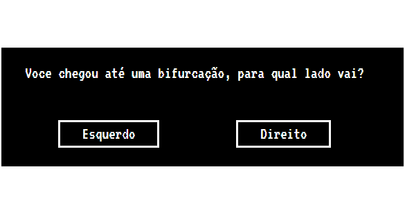

TURORIAL!
1 - Assim que apertar o botao jogar você deverá inserir o nome de seu personagem.
Logo após apertar em comecar para iniciar sua jornada
2 - Depois decida o nivel de dificuldade que quer jogar sendo eles:
3 - Então a jornada se inicia e irá aparecer diversas situações em sua tela que você deverá escolher qual atitude irá tomar
4 - Após sua escolha, um d20 será rolado e caso você tire um número maior que 14, tudo ocorrerá bem e poderá continuar sua jornada...
caso tire um número menor que 14, poderá tomar dano
5 - Se sua vida chegar a 0 você morrerá e acabará sua jornada de forma trágica, caso você chegue ao nivel 10 ainda com vida, parabéns, você concluiu sua jornada